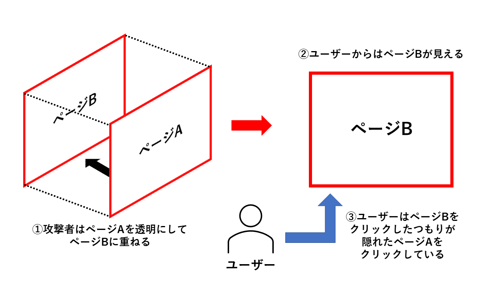

クリックジャッキングとは、WEBサイト上に隠されたリンクやボタンを置いて、
気づかれないようにクリックさせて、意図しない操作をさせる攻撃のことです。

①攻撃者はまず、WEBサイト上に、HTMLのiframeというタブを使用して
ユーザーが普段使用しているサイトのページBを表示します。
そこに、攻撃者が用意したページAをJavaScriptで透明にして重ねます。
②ユーザーがそのサイトにアクセスしても、
ユーザーからはページBしか見えないため、信頼してしまいます。
③ユーザーがページBをクリックしたと思っても
隠れているページAをクリックしてしまい、
意図していない操作が行われてしまいます。